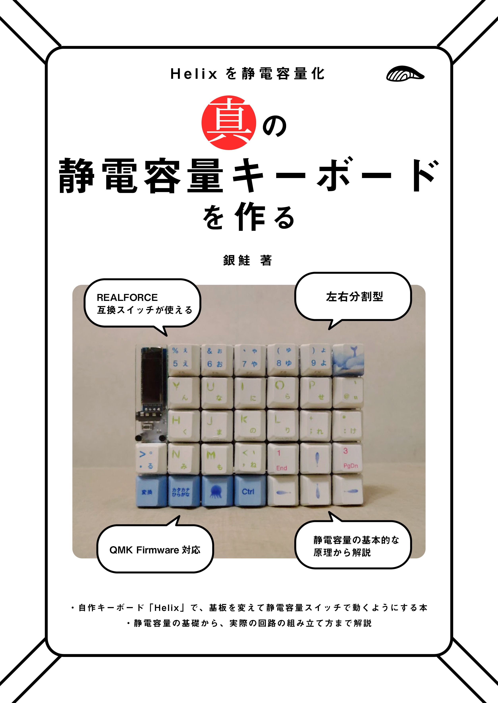
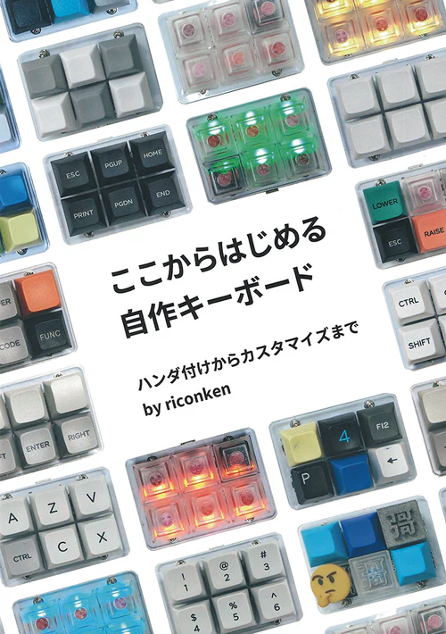

自己紹介
高校時代にゲーム制作にハマり、大学時代のバイトでWebページ制作を学ぶ。
Webアプリやハードウェア、VRゲーム、アナログゲームなどモノ作りがとにかく好き。
PHP(Laravel)、JavaScriptがメインだが、PythonやC++、Ruby、Unityなども必要があれば触る。
趣味はVRと旅行、DJ、音楽ゲーム、TRPG。
好きなモノを広めるために、記事執筆やイベント開催など、多角的に活動している。
メディア出演

報道ステーション
メタバース"2700時間超え滞在者"に聞く魅力・・・人間の五感を再現した未来も
アナウンサーの大越さんを自宅に招き、メタバース体験をしてもらいました。番組構成からスタッフ集め、許諾まで、VRパートの大部分を担当しました。
バキバキビートII
関西の音楽番組「バキバキビートII」にて映像の提供と編集を行いました。クラブイベントの紹介映像を番組用に編集し、協力させていただきました。


VR・ゲーム
Nexus Conquest
Resonite内で遊べるマルチ対戦シューティングです。ディレクターと様々な雑務を担当しました。
Resonite用ドット絵アバター「フローネ」
Resoniteで無料で使えるドット絵のアバターです。基本的なギミックと、ドット絵イラストを担当しました。
他人の作品で勝手にCM選手権
応募作品に観客がテーマをつけてCMを作るイベント。「※」「爆発と革命が起こす新時代のまくら」というテーマで、株式会社ROOXさんのV睡まくら「ぶいすいーと」のCM動画を制作しました。
ハードウェア

